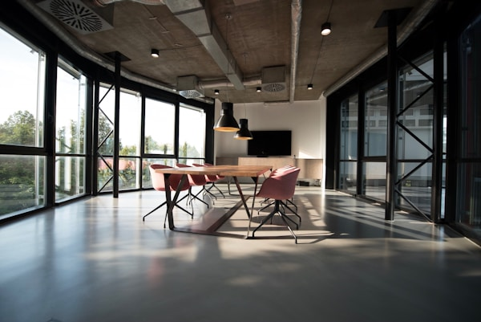
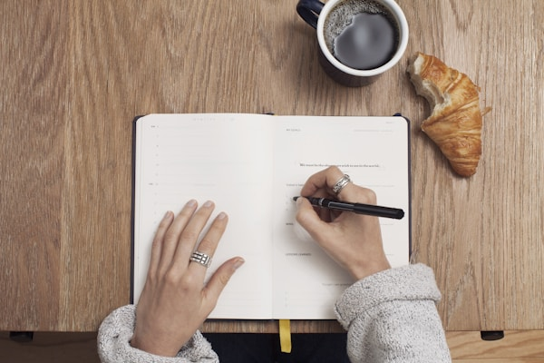

Home | My Story | A Day in My Life | Challenges | Goals
My daily routine may look simple, but every activity is part of my journey. I have learned that managing my time is one of the most important skills I need as a working student.




Time management is very important in my daily life. I try to finish important tasks first and use my free time wisely. Even a small amount of free time can help me finish an assignment or prepare for school.